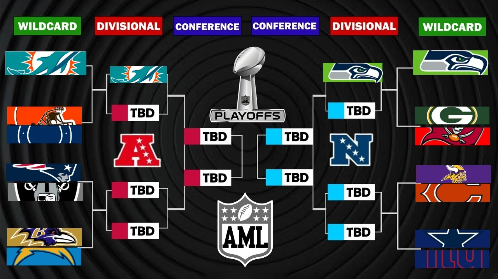

SEASON CHAMPION
Seahawks
User: ColeWorld
Super Bowl: Seahawks 50–14 over Colts / Sherm
Standings, playoff bracket, postseason score graphics, champion and MVP from AML Season 9.
User: ColeWorld
Super Bowl: Seahawks 50–14 over Colts / Sherm
User: Barry
Christian Watson — Packers
4,292 REC YDS • 59 REC TD • 154 REC • 252.5 YPG • 27.9 AVG
DW marks a confirmed division winner where it was supplied in the archive.

OPEN FULL BRACKET ↗12 score graphics recovered for Season 9.